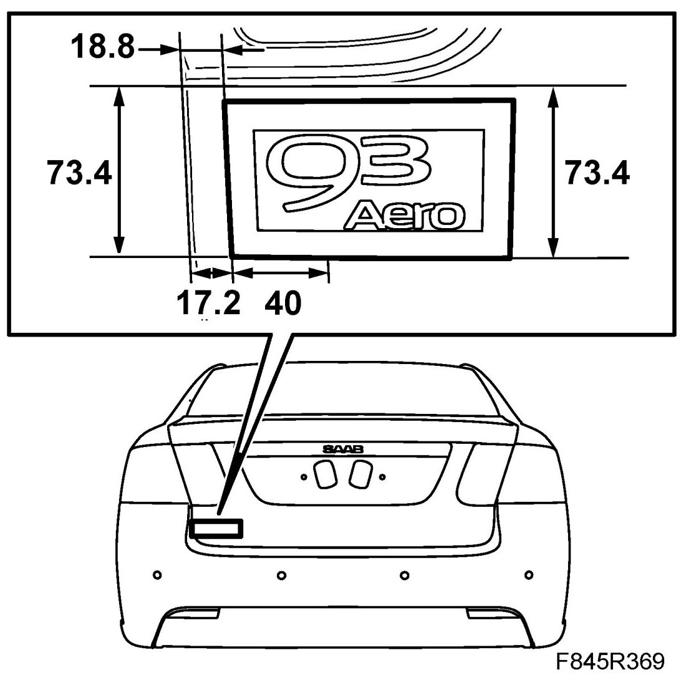
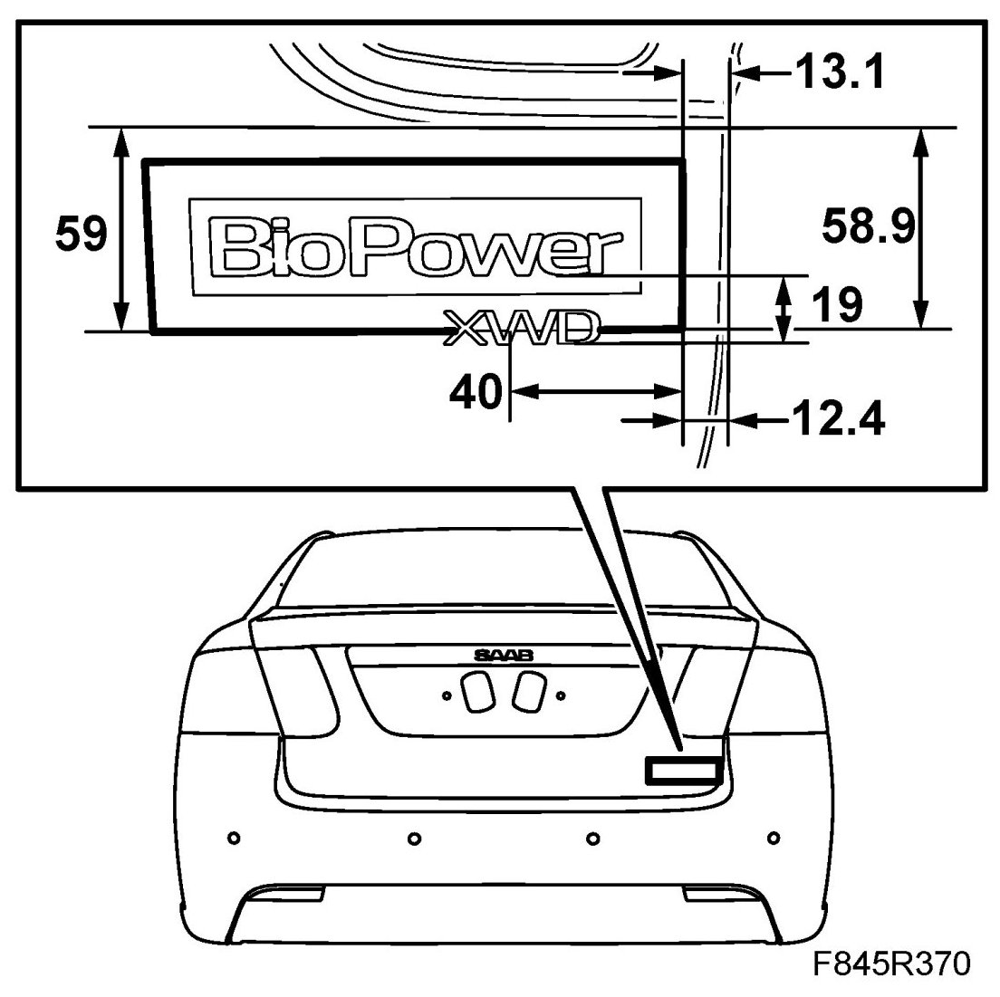
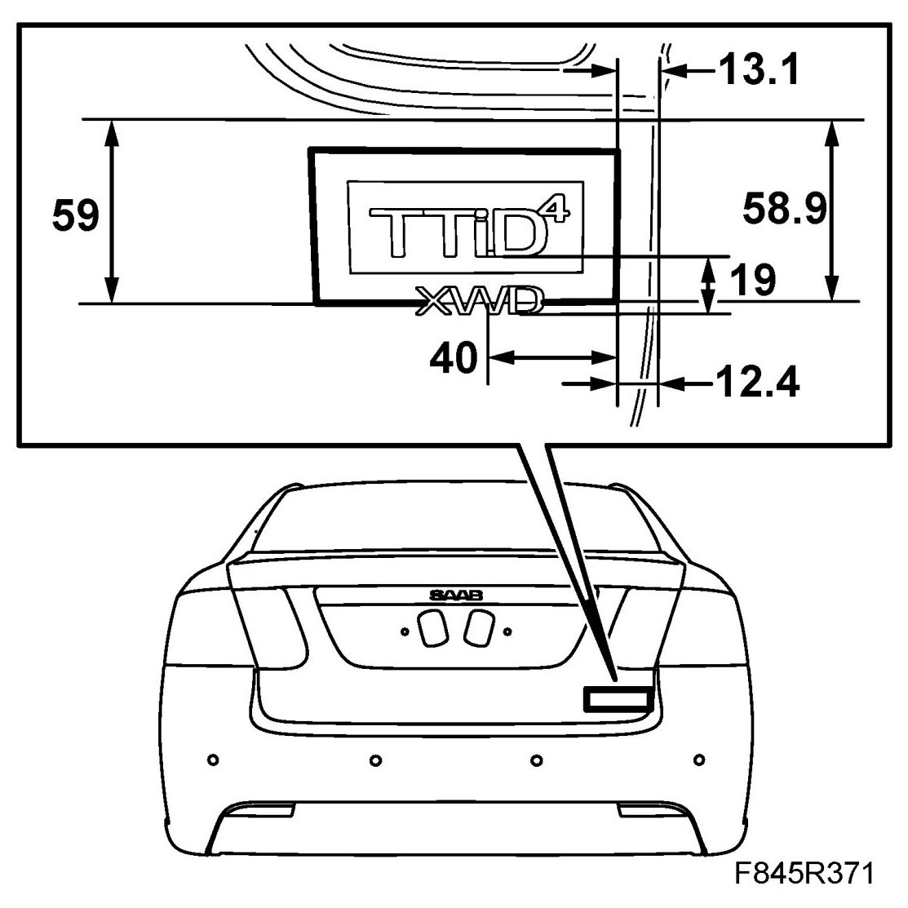
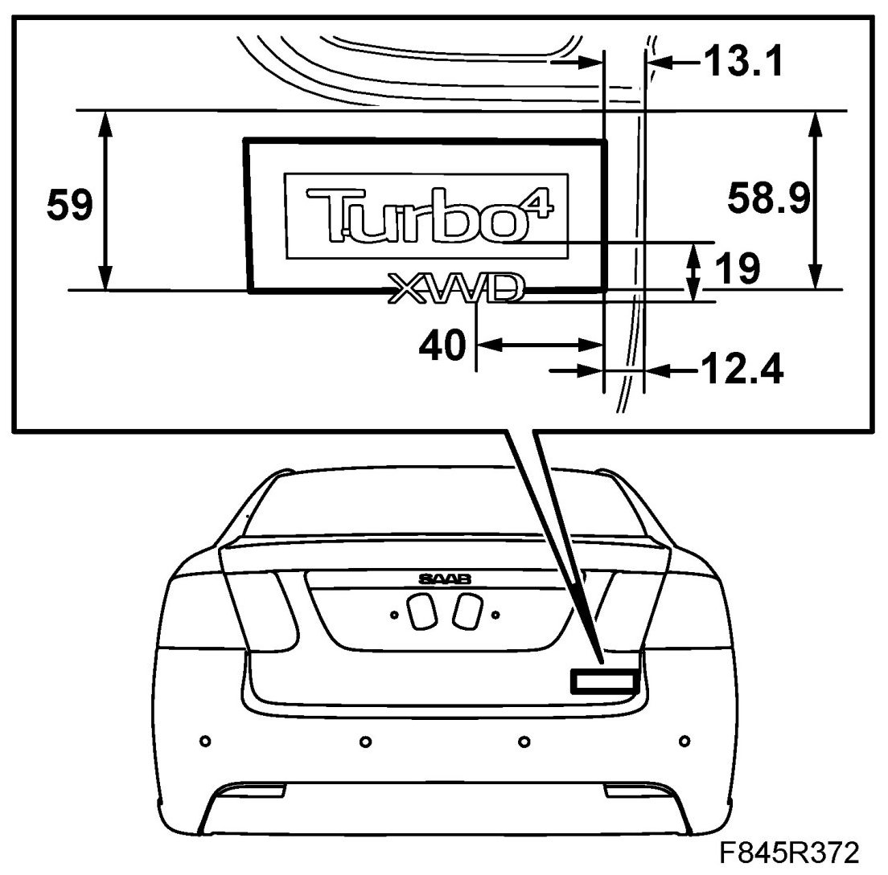

Emblem, 4D
Emblem, 4D
Emblems are supplied as a spare part in a pack containing a transparent mounting frame with protective backing tape. The following description shows how to affix the emblem. Use the edges of the mounting frame to support the emblem when fitting on the boot lid.
The Saab emblem on the bonnet is affixed with double-sided adhesive tape and positioned with guide clips.
To remove
Protect the paint by masking around the emblem. Use 82 93 474 Removal tool and carefully prise off the emblem.
Affixing 9-3 and engine variant emblem
NOTE: The emblem must have a temperature of approximately 28-38°C (82-100°F) before it can be fitted. The car should be at room temperature, approximately 20° (68°F).
1. First clean the area where the emblem is to be affixed with benzene. Remove the backing tape from the emblem and keep the emblem in the mounting frame.
2. Position the edges of the mounting frame as illustrated.




3. Press and then remove the frame.
Affixing the Saab emblem
NOTE: The emblem must maintain a temperature of approx. 28- 38°C (82-100°F) before being fitted. The car must be at room temperature, approx. 20°C (68°F).
1. First wash the area where the emblem is to be mounted with benzene.
2. Remove the backing tape from the emblem.
3. Guide the emblem guide clips in place on the bonnet and press on the emblem.